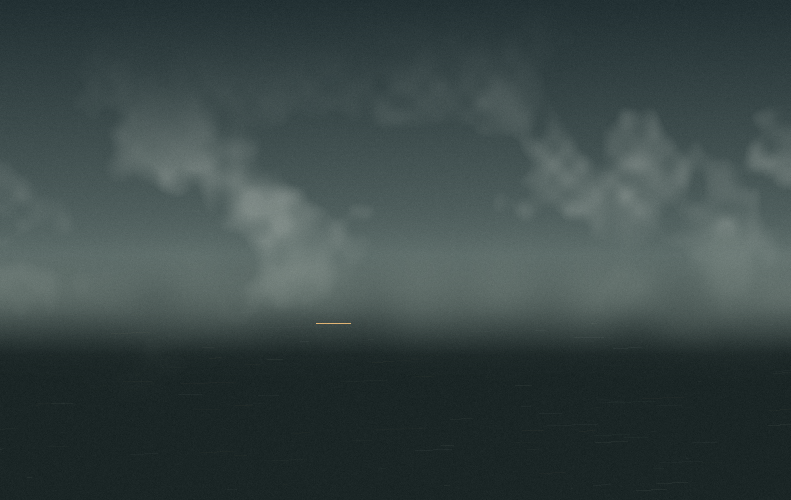
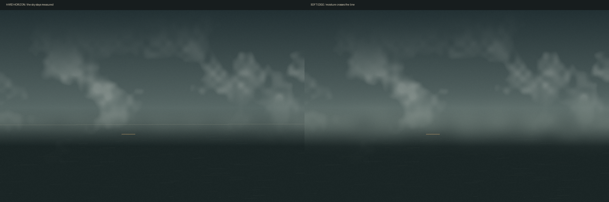

Lafox at 98%
A chance weather reading, 15 October 2026: 14°C, relative humidity 98%, precipitation 0.0 mm, cloud cover 52%, wind 4.7 km/h. These numbers are the starting point, not a view of Lafox.

I imagined moisture softening the cloud without releasing rain. The horizon remains as a shift in value, not a drawn edge. One small warm interval holds in the lower dark.
The first pass held a harder line between sky and plane. See both horizon readings.

Back to the bowl that waits